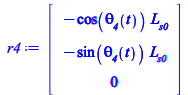
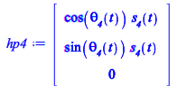
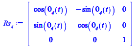
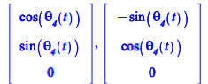
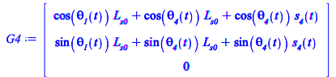
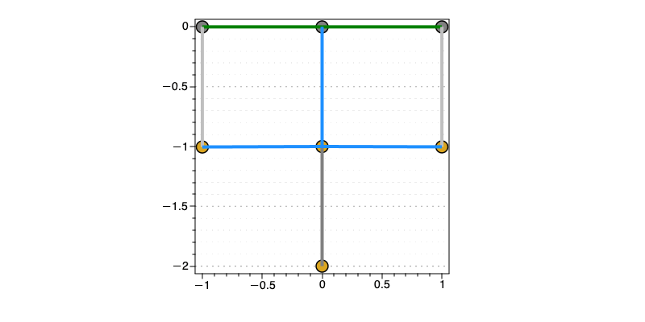

Kinematic with mass m4 and damper added
In this section the kinematic model of the new mechanical system is defined and the displayed
| > | r4 := Rz(theta__4(t)).<-L__s0,0,0>; |
|  | (7.1.1) |
| > | hp4 := Rz(theta__4(t)).(s__4(t)*<1,0,0>); |
|  | (7.1.2) |
| > | Rs__4 := Rz(theta__4(t));
is_uvec__4 := %[1..3,1]: js_uvec__4 := %%[1..3,2]: is_uvec__4,js_uvec__4; |
|  | |
|  | (7.1.3) |
| > | G4 := -r1-r4+hp4; |
|  | (7.1.4) |
The following procedure is defined in order to display the configuration of the mechanical system with the mass m4 and the dumper added
| > | draw_mech__2 := proc(data, sol_kine, dof)
local p0,p2,p3,pG1,pG2,pG3,pG4,LS1,LS2,LS3,LS4,SS2,SS3,SS4,PS1,PS2, PS3, VS; p0 := subs(sol_kine, dof,data, P0); p2 := subs(sol_kine, dof,data, P2); p3 := subs(sol_kine, dof,data, P3); pG1 := subs(sol_kine, dof,data, G1): pG2 := subs(sol_kine, dof,data, G2): pG3 := subs(sol_kine, dof,data, G3): pG4 := subs(sol_kine, dof,data, G4): LS1 := subs(sol_kine, dof,data, L__s0*is_uvec__1); LS2 := subs(sol_kine, dof,data, L__s0*is_uvec__2); LS3 := subs(sol_kine, dof,data, L__s0*is_uvec__3); LS4 := subs(sol_kine, dof,data, L__s0*is_uvec__4); SS2 := subs(sol_kine, dof,data, s__2(t)*is_uvec__2); SS3 := subs(sol_kine, dof,data, s__3(t)*is_uvec__3); SS4 := subs(sol_kine, dof,data, s__4(t)*is_uvec__4); PS1 := p0+LS1; PS2 := p2+LS2+SS2; PS3 := p3+LS3+SS3; display( plottools:-disk(vec_2D(p0),0.05,color="Gray"), plottools:-disk(vec_2D(p2),0.05,color="Gray"), plottools:-disk(vec_2D(p3),0.05,color="Gray"), plottools:-disk(vec_2D(PS1),0.05,color="Goldenrod"), plottools:-disk(vec_2D(PS2),0.05,color="Goldenrod"), plottools:-disk(vec_2D(PS3),0.05,color="Goldenrod"), plottools:-disk(vec_2D(pG4),0.05,color="Goldenrod"), plottools:-line(vec_2D(p0),vec_2D(p2),color="Green",thickness=4), plottools:-line(vec_2D(p0),vec_2D(p3),color="Green",thickness=4), plottools:-line(vec_2D(p0),vec_2D(PS1),color="DodgerBlue",thickness=4), plottools:-line(vec_2D(p2),vec_2D(PS2),color="grey",thickness=4), plottools:-line(vec_2D(PS1),vec_2D(pG4),color="Gray",thickness=4), plottools:-line(vec_2D(p3),vec_2D(PS3),color="grey",thickness=4), plottools:-line(vec_2D(PS1),vec_2D(PS2),color="DodgerBlue",thickness=4), plottools:-line(vec_2D(PS1),vec_2D(PS3),color="DodgerBlue",thickness=4), axes = boxed, scaling = constrained ); end proc: anim_draw_mech := proc(data, sol_kine, dof::list, k) draw_mech(data, sol_kine, dof[k]); end proc: |
| > | display(draw_mech__2(data,sol_kine_all[2],[s__2(t) = op(2,sol_fs[1]), s__3(t) = op(2,sol_fs[2]), theta__1(t) =op(2,sol_fs[3]), theta__2(t) = op(2,sol_fs[4]), theta__3(t) = op(2,sol_fs[5]),theta__4(t)=3*Pi/2,s__4(t)=0]),size=[800,400]); |
|  |